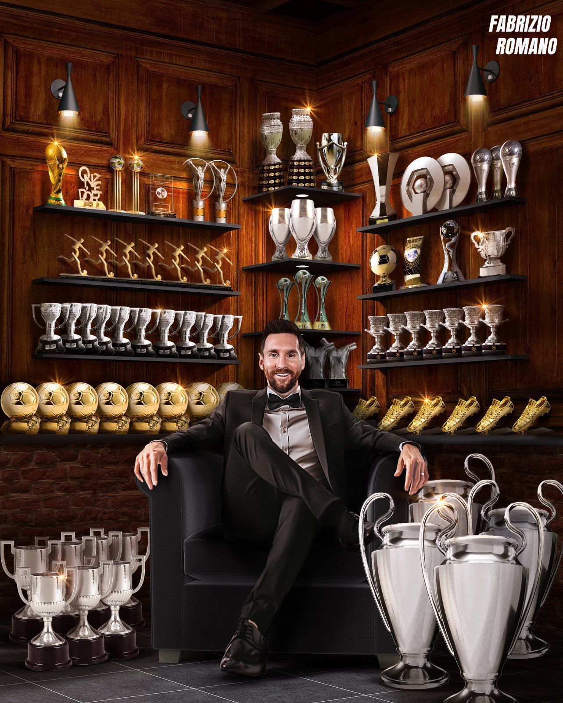

El Jugador con mas titulos en la historia del deporte.
Leo Messi puede presumir de la mayor vitrina de títulos colectivos y reconocimientos individuales del 'planeta fútbol'. El legendario delantero argentino ha levantado 46 trofeos en sus 21 temporadas como profesional, una cifra que le sitúa como el jugador más laureado de la historia.
A nivel doméstico, con el FC Barcelona logró 10 Ligas, 7 Copas del Rey y 8 Supercopas de España. Con el Paris Saint Germain sumó dos Ligue 1 más una Supercopa de Francia y vistiendo los colores de Inter de Miami ha logrado recientemente la MLS Supporters Shield.
En el ámbito internacional, la 'Pulga' levantó hasta 4 Champions League, 3 Mundiales de clubes y 3 Supercopas de Europa, todas ellas con el Barça. A los pocos meses de su llegada a Miami también triunfó con la Leagues Cup..
Con la selección argentina el balance de Leo es de un Mundial imborrable, dos Copas América, una Finalissima, un Mundial sub-20 y una medalla de oro olímpica en Pekín 2008.
56 reconocimientos individuales
Pero es que más allá de lo colectivo, el '10' no ha dejado de sumar premios individuales en una carrera exitosa como ninguna. 8 Balones de Oro, 8 'Pichichis', 9 'MVPs' de LaLiga, 6 Botas de Oro, 6 Champions League Top Scorer, 4 Onzes d'Or, 3 The Best, 2 premios a Mejor jugador de Europa, 2 Balones de Oro del Mundial, 2 'MVPs' de la Copa América, 2 Laureus, un FIFA World Player, un FIFA FIFPro, un Golden Boy y un Bravo.